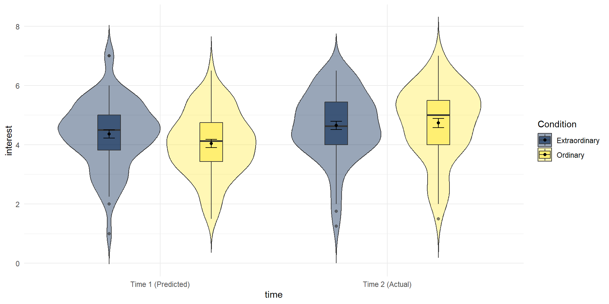
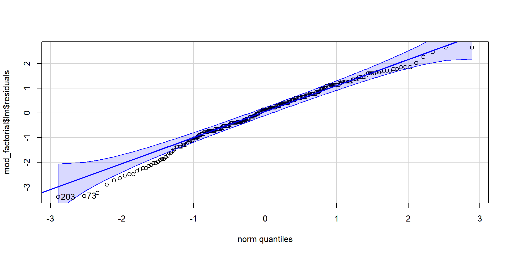
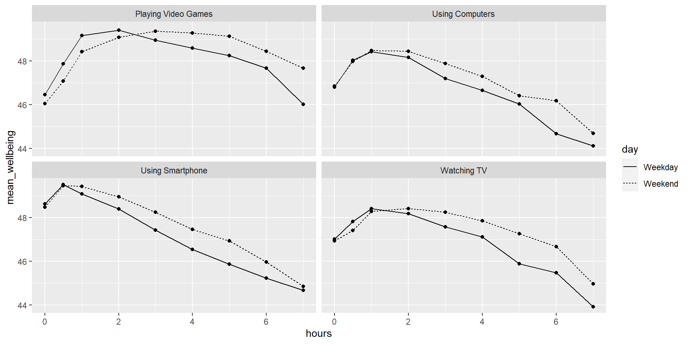

11 ANOVA & the General Linear Model in R
Julius-Maximilians-University Würzburg
Course: “Biostatistics”
Translational Neuroscience
Factorial ANOVA
Last session, we have used one-way ANOVAs to analyze data for which we were interested in differences between levels of one factor (between-subjects groups) on a continuous dependent variable.
Today, we want to turn towards the case where we have several factors as independent variables/predictors. We can do so by running a factorial ANOVA or a linear model.
One big advantage of using ANOVAs is when you have repeated measures/within-subject data. They are not easily fit in LMs (you would need Linear Mixed Models), but you can use repeated-measures ANOVA for this kind of data!
Setup
We will use the data by Zhang et al. (2014), Study 3 (Click here to download)
The study design was a 2x2 design:
time (time1, time2) - within-subjects IV
event (ordinary vs. extraordinary) - between-subjects IV
DV: interest
Data Wrangling
Tasks:
- Read in the data file
- Select the three columns we need
- Add a column of subject IDs using the row number
- Tidy the data: bring it into long format
- Recode the values of Condition from numeric to text labels
- Recode the values of time to be easier to read/write
- Change the data type of Condition and time to be factors!
Replace the “NULLs” to achieve all this step by step…
zhang_data2 <- read_csv("Zhang et al. 2014 Study 3.csv") %>%
select(NULL, NULL, NULL) %>%
mutate(subject = NULL) %>%
NULL(names_to = "time", values_to = "interest",
cols = c(T1_Predicted_Interest_Composite, T2_Actual_Interest_Composite)) %>%
mutate(Condition = Condition %>% NULL("1" = "Ordinary", "2" = "Extraordinary"),
time = time %>% NULL("T1_Predicted_Interest_Composite" = "Time 1 (Predicted)",
"T2_Actual_Interest_Composite" = "Time 2 (Actual)"),
NULL = as.factor(NULL))zhang_data2 <- read_csv("Data/Zhang et al. 2014 Study 3.csv") %>%
select(Condition, T1_Predicted_Interest_Composite, T2_Actual_Interest_Composite) %>%
mutate(subject = row_number()) %>%
pivot_longer(names_to = "time",values_to = "interest",
cols = c(T1_Predicted_Interest_Composite, T2_Actual_Interest_Composite)) %>%
mutate(Condition = Condition %>% recode("1" = "Ordinary", "2" = "Extraordinary") %>% as.factor(),
time = time %>% recode("T1_Predicted_Interest_Composite" = "Time 1 (Predicted)",
"T2_Actual_Interest_Composite" = "Time 2 (Actual)") %>% as.factor())Descriptive Statistics
Calculate descriptive statistics (mean, SD, and N) for interest summarized for each Condition and each time. Store the results in a variable called sum_dat_factorial.
Visualize the data: Violin-Boxplot
Write the code that produces violin-boxplots for the scores in each group. time should be on the x-axis and Condition should be in different colors; interest is on the y-axis. Such plots are called “grouped” (e.g., grouped boxplot).
Hint: You want to add position = position_dodge(width = 0.9) to everything except the violin plot for alignment.
ggplot(zhang_data2,
aes(x = time , y = interest, fill = Condition))+
geom_violin(trim = FALSE, alpha = .4) +
geom_boxplot(position = position_dodge(.9),
width = .2, alpha = .6) +
#scale_x_discrete(labels = c("Time 1", "Time 2")) +
scale_fill_viridis_d(option = "E") +
stat_summary(fun = "mean", geom = "point",
position = position_dodge(width = 0.9)) +
stat_summary(fun.data = "mean_se", geom = "errorbar", width = .1,
position = position_dodge(width = 0.9)) +
theme_minimal()
Interaction (line) plot
In this visualization, we want to look at time and Condition to see whether an interaction might be present. It is helpful to make a line plot with time on the x-axis, Condition as separate lines, and (mean) interest on the y-axis.
lineplot = sum_dat_factorial %>% mutate(se_interest = sd_interest / sqrt(n)) %>%
ggplot(aes(x = time, y = mean_interest, group = Condition, shape = Condition)) +
geom_errorbar(aes(ymin = mean_interest - se_interest, ymax = mean_interest + se_interest), width=.5) +
geom_point(size = 5) +
geom_line(aes(linetype = Condition)) +
#scale_x_discrete(labels = c("Time 1", "Time 2")) + #this is how you could change x-axis labels
theme_classic()
lineplotThe increase in interest between time 1 and 2 seems greater in the ordinary condition! But is this interaction effect significant?
Note: The (between-subject) errorbars are only helpful to interpret the significance of the between-subject effect Condition (at each time point). For the within-subject effect of time, we would need the mean and standard error of the paired differences (but this is very hard to visualize).
Mixed ANOVA
We now want to run a mixed ANOVA. It is called “mixed” because it includes both between- and within-subjects factors.
Complete the below code to run the factorial ANOVA. Remember that you will need to specify both IVs and that one of them is between-subjects and one of them is within-subjects. Look up the help documentation for aov_ez to find out how to do this.
Save the ANOVA model to an object called mod_factorial
Run the code and inspect the result. Now, try to pull out the ANOVA table only. You can either do this with
mod_factorial$anova_tableoranova(mod_factorial). Hint: You can use tidy() to save the output table as a data frame, which might be useful.
mod_factorial <- aov_ez(id = "subject",
data = zhang_data2,
between = "Condition",
within = "time",
dv = "interest",
type = 3,
es = "pes")
anova(mod_factorial) %>% tidy() #or mod_factorial$anova_table %>% tidy()# A tibble: 3 × 7
term num.Df den.Df MSE statistic ges p.value
<chr> <dbl> <dbl> <dbl> <dbl> <dbl> <dbl>
1 Condition 1 128 2.05 0.463 0.00278 0.498
2 time 1 128 0.607 25.9 0.0441 0.00000126
3 Condition:time 1 128 0.607 4.44 0.00786 0.0370 Effect
1 (Intercept) F(1, 128) = 2505.82, p < .001, petasq = .95 ***
2 Condition F(1, 128) = 0.46, p = .498, petasq < .01
3 time F(1, 128) = 25.88, p < .001, petasq = .17 ***
4 Condition:time F(1, 128) = 4.44, p = .037, petasq = .03 * Mixed ANOVA Results
Effect
1 (Intercept) F(1, 128) = 2505.82, p < .001, petasq = .95 ***
2 Condition F(1, 128) = 0.46, p = .498, petasq < .01
3 time F(1, 128) = 25.88, p < .001, petasq = .17 ***
4 Condition:time F(1, 128) = 4.44, p = .037, petasq = .03 * Conclusion: The main effect of time and the interaction between time and Condition are significant. Judged by visual inspection of the plot, interest increases over time, especially for the “ordinary” group.
Assumption checking
The assumptions for a factorial ANOVA are the same as the one-way ANOVA.
The DV is continuous (interval or ratio data)
The observations should be independent
The residuals should be normally distributed
There should be homogeneity of variance between the groups
To test assumption 3, extract the residuals from the model, create a QQ-Plot and conduct a Shapiro-Wilk test. For assumption 4, we use the Levene test for homogeneity of variance.

[1] 203 73
Shapiro-Wilk normality test
data: mod_factorial$lm$residuals
W = 0.98325, p-value = 0.003785# levene's test
#afex::test_levene(mod_factorial) #old version
performance::check_homogeneity(mod_factorial)OK: There is not clear evidence for different variances across groups (Levene's Test, p = 0.893).Write up
What do we need to report?
Summary statistics (means, SDs) per cell
F(df1, df2) = F-value, p = p-value, effect size per effect (
apapackage!)Possibly pairwise contrasts (or t-tests)
Interpretation (direction of effect and theoretical meaning)
Regression/Linear Model
You can run a regression with two continuous variables, one IV and one DV (similar to correlations). Check out Chapter 16 on how to do that.
You can also have categorical IVs, which would make it similar to running an ANOVA.
But most importantly, the linear model is super flexible and you can combine continuous and categorical IVs or predictors! This is called multiple regression because you have several IVs.
Setup
We will use the data from this paper: Przybylski, A. & Weinstein, N. (2017). A Large-Scale Test of the Goldilocks Hypothesis.
In the paper, the authors investigated whether there is a “just right” amount of screen time that is associated with higher well-being.
In this huge dataset (\(N=120,000\)), we have the following variables that we will use for analysis:
a continuous DV,
well-being(Warwick-Edinburgh Mental Well-Being Scale; WEMWBS). This is a 14-item scale with 5 response categories, summed together to form a single score ranging from 14-70 (so it’s not completely continuous…),a continuous predictor/IV:
screen time,a categorical predictor/IV:
gender.
Tasks
Download wellbeing.csv, participant_info.csv and screen_time.csv and save them in your Chapter folder. Make sure that you do not change the file names at all.
Load the CSV datasets into variables called
pinfo,wellbeing, andscreenusingread_csv().Take a look at the data and make sure you understand what you see.
The
wellbeingtibble has information from the WEMWBS questionnaire,screenhas information about screen time use on weekends (variables ending with “we”) and weekdays (variables ending with “wk”) for four types of activities:using a computer (variables starting with “Comph”; Q10 on the survey)
playing video games (variables starting with “Comp”; Q9 on the survey)
using a smartphone (variables starting with “Smart”; Q11 on the survey), and
watching TV (variables starting with “Watch”; Q8 on the survey).
Preprocessing
Calculate the WEMWBS scores by taking the sum of all the items:
Write the code to create a new table called
wemwbswith two variables:Serial(the participant ID), andtot_wellbeing, the total WEMWBS score.you might have to “pivot” the data from wide to long format and use
.byto calculate the well-being (WEMWBS) score per person.verify for yourself that the scores all fall in the 14-70 range. Przybylski and Weinstein reported a mean of 47.52 with a standard deviation of 9.55. Can you reproduce these values?
wemwbs = wellbeing %>%
pivot_longer(names_to = "var", values_to = "score", cols = -Serial) %>%
summarise(tot_wellbeing = sum(score), .by=Serial)
# you could also mutate(tot_wellbeing = WBOptimf + ...)
# but it is easier to use "across" and "filter" the variable names
wemwbs = wellbeing %>% mutate(tot_wellbeing = rowSums(across(starts_with("WB")))) %>%
select(Serial, tot_wellbeing)
# sanity check values
wemwbs %>% summarise(mean = mean(tot_wellbeing),
sd = sd(tot_wellbeing),
min = min(tot_wellbeing),
max = max(tot_wellbeing)) mean sd min max
1 47.52189 9.546374 14 70Data Visualization
We now want to visualize the relationship between screen time (for the four different technologies) and well-being.
Run the code below and write comments in the code that explain what each line of code is doing:
screen_long <- screen %>%
pivot_longer(names_to = "var", values_to = "hours", -Serial) %>%
separate(var, c("variable", "day"), "_")
screen2 <- screen_long %>%
mutate(variable = variable %>% recode("Watch" = "Watching TV",
"Comp" = "Playing Video Games",
"Comph" = "Using Computers",
"Smart" = "Using Smartphone"),
day = day %>% recode("wk" = "Weekday", "we" = "Weekend"))
dat_means <- inner_join(wemwbs, screen2, "Serial") %>%
summarise(mean_wellbeing = mean(tot_wellbeing), .by=c(variable, day, hours))
dat_means %>% ggplot(aes(hours, mean_wellbeing, linetype = day)) +
geom_line() +
geom_point() +
facet_wrap(vars(variable), nrow = 2)
Also describe what you see in the figures/plots that you get when running the code.
There seems to be a peak around 1h/day for max. wellbeing for all sorts of screen time.
Data Wrangling
We need to do a few things to get a dataset that we can use for analysis:
- Create a new table,
smarttot, that has the mean number of hours per day of smartphone use for each participant, averaged over weekends/weekdays.
- You will need to filter the dataset to only include smartphone use and not other technologies.
- The final data set should have two variables:
Serial(the participant) andtothours. In this step, you will need to summarise the data.
- You will also need to group the summary by the participant ID (i.e.,
serial).
- You will need to use the dataset
screen2to do this.
- Next, create a new tibble called
smart_wbthat only includes participants fromsmarttotwho used a smartphone for more than one hour per day each week and then combine (join) this table with the information inwemwbsandpinfo.
Data Wrangling 2
When you do regression analysis, it is helpful to mean center your continuous (independent) variables. You mean center a predictor X simply by subtracting the mean (X_centered = X - mean(X)). This has two useful consequences:
- the model intercept reflects the prediction for Y at the mean value of the predictor variable, rather than at the zero value of the original variable;
- if there are interactions in the model, any lower-order effects can be given the same interpretation as they receive in ANOVA (main effects, rather than simple effects). (Don’t worry if you don’t understand what this means yet!)
If you mean-center categorical predictors with two levels, these become coded as \(-.5\) and \(.5\) (because the mean of these two values is 0). This is also handy and is called effects coding. (Not exactly true for unequal group sizes! So rather use if_else() function and assign \(-.5\) and \(.5\))
Tasks
Use mutate to add two new variables to
smart_wb:tothours_c, calculated as a mean-centered version of thetothourspredictor; andmale_c, recoded as \(-.5\) for female and \(.5\) for male.To create
male_cyou will need to useif_else(male == 1, .5, -.5)
(Read as: “If the variable male equals 1, switch it to \(.5\), if not, switch it to \(-.5\)”.)Finally, recode
maleandmale_cas factors, so that R knows not to treat them as real numbers.
smart_wb <- smarttot %>%
filter(tothours > 1) %>%
inner_join(wemwbs, "Serial") %>%
inner_join(pinfo, "Serial") %>%
mutate(thours_c = tothours - mean(tothours),
#thours_c = tothours %>% scale(), #alternative, also scales the variable to SD=1
male_c = if_else(male == 1, .5, -.5) %>% as_factor(),
male = as_factor(male))Data Visualization 2
Try to recreate the following plot:
smart_wb_gen <- smart_wb %>%
summarise(mean_wellbeing = mean(tot_wellbeing), .by= c(tothours, male))
ggplot(NULL, aes(NULL, NULL, color = NULL)) +
geom_NULL() + # which geom to use for the points?
geom_NULL(method = "lm") + # which geom for the lines?
scale_color_discrete(name = "Gender", labels = c("Female", "Male"))+
scale_x_continuous(name = "Total hours smartphone use") +
scale_y_continuous(name = "Mean well-being score") +
theme_bw()smart_wb_gen <- smart_wb %>%
summarise(mean_wellbeing = mean(tot_wellbeing), .by = c(tothours, male))
ggplot(smart_wb_gen, aes(tothours, mean_wellbeing, color = male)) +
geom_point() +
geom_smooth(method = "lm") +
scale_color_discrete(name = "Gender", labels = c("Female", "Male"))+
scale_x_continuous(name = "Total hours smartphone use") +
scale_y_continuous(name = "Mean well-being score") +
theme_bw()Analysis
Try to specify the following regression model in R:
\(Y_i = \beta_0 + \beta_1 X_{1i} + \beta_2 X_{2i} + \beta_3 X_{3i} + e_i\)
where
\(Yi\) is the well-being score for participant i;
\(X1i\) is the mean-centered smartphone use variable for participant i;
\(X2i\) is gender (-.5 = female, .5 = male);
\(X3i\) is the interaction between smartphone use and gender (=\(X1i×X2i\))
mod <- lm(tot_wellbeing ~ thours_c * male_c, data = smart_wb)
#mod <- lm(tot_wellbeing ~ thours_c + male_c + thours_c:male_c, data = smart_wb)
mod_summary <- summary(mod)
mod_summary
Call:
lm(formula = tot_wellbeing ~ thours_c * male_c, data = smart_wb)
Residuals:
Min 1Q Median 3Q Max
-36.881 -5.721 0.408 6.237 27.264
Coefficients:
Estimate Std. Error t value Pr(>|t|)
(Intercept) 44.86740 0.04478 1001.87 <2e-16 ***
thours_c -0.77121 0.02340 -32.96 <2e-16 ***
male_c0.5 5.13968 0.07113 72.25 <2e-16 ***
thours_c:male_c0.5 0.45205 0.03693 12.24 <2e-16 ***
---
Signif. codes: 0 '***' 0.001 '**' 0.01 '*' 0.05 '.' 0.1 ' ' 1
Residual standard error: 9.135 on 71029 degrees of freedom
Multiple R-squared: 0.09381, Adjusted R-squared: 0.09377
F-statistic: 2451 on 3 and 71029 DF, p-value: < 2.2e-16By which variable in the output is the interaction between smartphone use and gender shown? Is it significant?
How would you interpret the results?
Assumption checking
Here are the assumptions for multiple regression:
The outcome/DV is continuous (interval/ratio level data)
The predictor variable is interval/ratio or categorical
All values of the outcome variable are independent (i.e., each score should come from a different participant)
The predictors have non-zero variance
The relationship between outcome and predictor is linear
The residuals should be normally distributed
There should be homoscedasticity (homogeneity of variance, but for the residuals)
Multicollinearity: predictor variables should not be too highly correlated
From the work we’ve done so far we know that assumptions 1 - 4 are met and we can use the functions from the performance package again to check the rest (this will take a while because the dataset is so huge):

(Note: the line in the homogeneity plot is missing due to the large amount of data. Check out the textbook for a solution as well as for further information on what these measures mean.)
Further Analysis of Interaction
We can use emmeans package to further investigate the direction of the interaction. This is especially handy if we have more than two factor levels and can’t read out the direction of the effect from the model summary.
Specifically, we’re using the emtrends() function, because we have a continuous variable and want to know the (simple) slope/trend of this variable within each of the factor levels of the categorical variable:
simple_slopes_interaction <- emtrends(mod, ~male_c|thours_c, var="thours_c")
simple_slopes_interactionthours_c = -3.41e-16:
male_c thours_c.trend SE df lower.CL upper.CL
-0.5 -0.771 0.0234 71029 -0.817 -0.725
0.5 -0.319 0.0286 71029 -0.375 -0.263
Confidence level used: 0.95 test(simple_slopes_interaction) # with the test() function, you can get the p-value to test whether the slope within each group is sign. different from 0!thours_c = -3.41e-16:
male_c thours_c.trend SE df t.ratio p.value
-0.5 -0.771 0.0234 71029 -32.956 <.0001
0.5 -0.319 0.0286 71029 -11.170 <.0001Power & effect size
Use this code to calculate power and effect size:
Multiple regression power calculation
u = 3
v = 71029
f2 = 0.0003673651
sig.level = 0.05
power = 0.99[1] 0.1034697Is the study adequately powered?
Write Up
For the write up, you can use this text block, including inline code (wrapped by R) to directly use the output of R in your text. If you then knit your document, it will insert the values:
All continuous predictors were mean-centered and deviation coding was used for categorical predictors. The results of the regression indicated that the model significantly predicted course engagement (*F*(`r mod_summary$fstatistic[2]`, `r mod_summary$fstatistic[3] %>% round(2)`) = `r mod_summary$fstatistic[1] %>% round(2)`, *p* \< .001, adjusted *R*^2 = `r mod_summary$adj.r.squared %>% round(2)`, f^2^ = .63), accounting for `r (mod_summary$adj.r.squared %>% round(2))*100`% of the variance. Total screen time was a significant negative predictor of wellbeing scores (β = `r mod$coefficients[2] %>% round(2)`, *p* \< .001), as was gender (β = `r mod$coefficients[3] %>% round(2)`, *p* \< .001), with girls having lower wellbeing scores than boys. Importantly, there was a significant interaction between screentime and gender (β = `r mod$coefficients[4] %>% round(2)`, *p* \< .001): Smartphone use was more negatively associated with wellbeing for girls than for boys.All continuous predictors were mean-centered and deviation coding was used for categorical predictors. The results of the regression indicated that the model significantly predicted course engagement (F(3, 7.1029^{4}) = 2450.89, p < .001, adjusted R^2 = 0.09, f2 = .63), accounting for 9% of the variance. Total screen time was a significant negative predictor of wellbeing scores (β = -0.77, p < .001), as was gender (β = 5.14, p < .001), with girls having lower wellbeing scores than boys. Importantly, there was a significant interaction between screentime and gender (β = 0.45, p < .001): Smartphone use was more negatively associated with wellbeing for girls than for boys.
You can also use the report() function from the report package to get a suggestion for what to report from your results (it would still need some editing!):
We fitted a linear model (estimated using OLS) to predict tot_wellbeing with
thours_c and male_c (formula: tot_wellbeing ~ thours_c * male_c). The model
explains a statistically significant and weak proportion of variance (R2 =
0.09, F(3, 71029) = 2450.89, p < .001, adj. R2 = 0.09). The model's intercept,
corresponding to thours_c = 0 and male_c = -0.5, is at 44.87 (95% CI [44.78,
44.96], t(71029) = 1001.87, p < .001). Within this model:
- The effect of thours c is statistically significant and negative (beta =
-0.77, 95% CI [-0.82, -0.73], t(71029) = -32.96, p < .001; Std. beta = -0.15,
95% CI [-0.16, -0.15])
- The effect of male c [0.5] is statistically significant and positive (beta =
5.14, 95% CI [5.00, 5.28], t(71029) = 72.25, p < .001; Std. beta = 0.54, 95% CI
[0.52, 0.55])
- The effect of thours c × male c [0.5] is statistically significant and
positive (beta = 0.45, 95% CI [0.38, 0.52], t(71029) = 12.24, p < .001; Std.
beta = 0.09, 95% CI [0.08, 0.11])
Standardized parameters were obtained by fitting the model on a standardized
version of the dataset. 95% Confidence Intervals (CIs) and p-values were
computed using a Wald t-distribution approximation.Thanks!
Learning objectives:
- how to run a mixed ANOVA or a LM in R!
Next session:
Linear Mixed Models